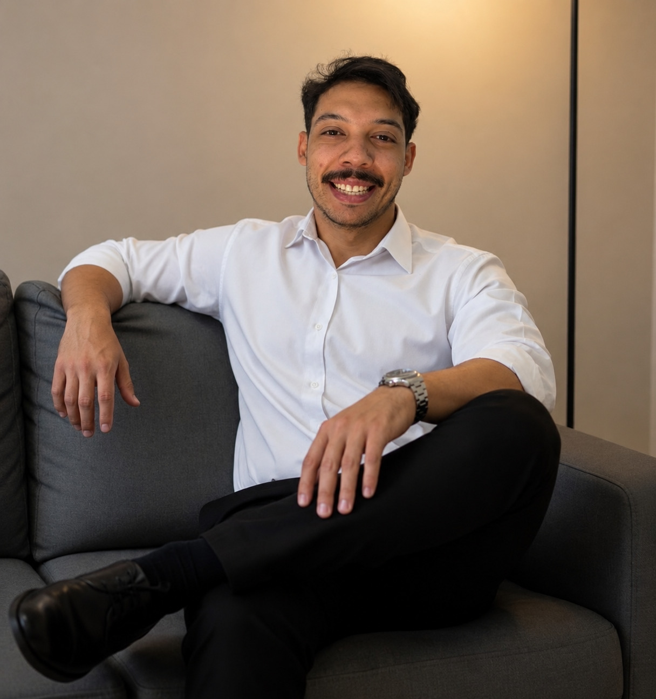
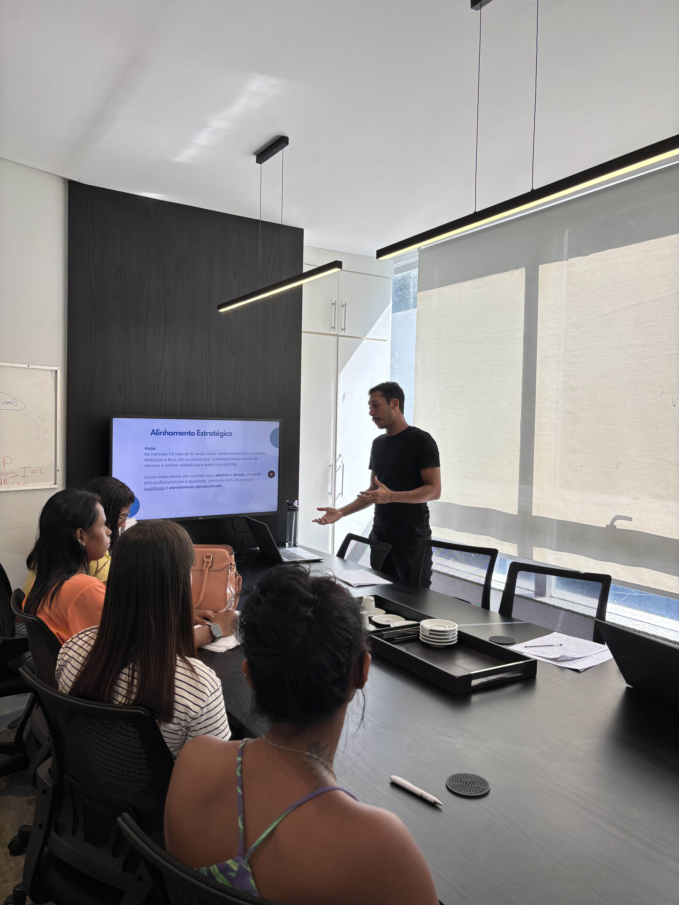
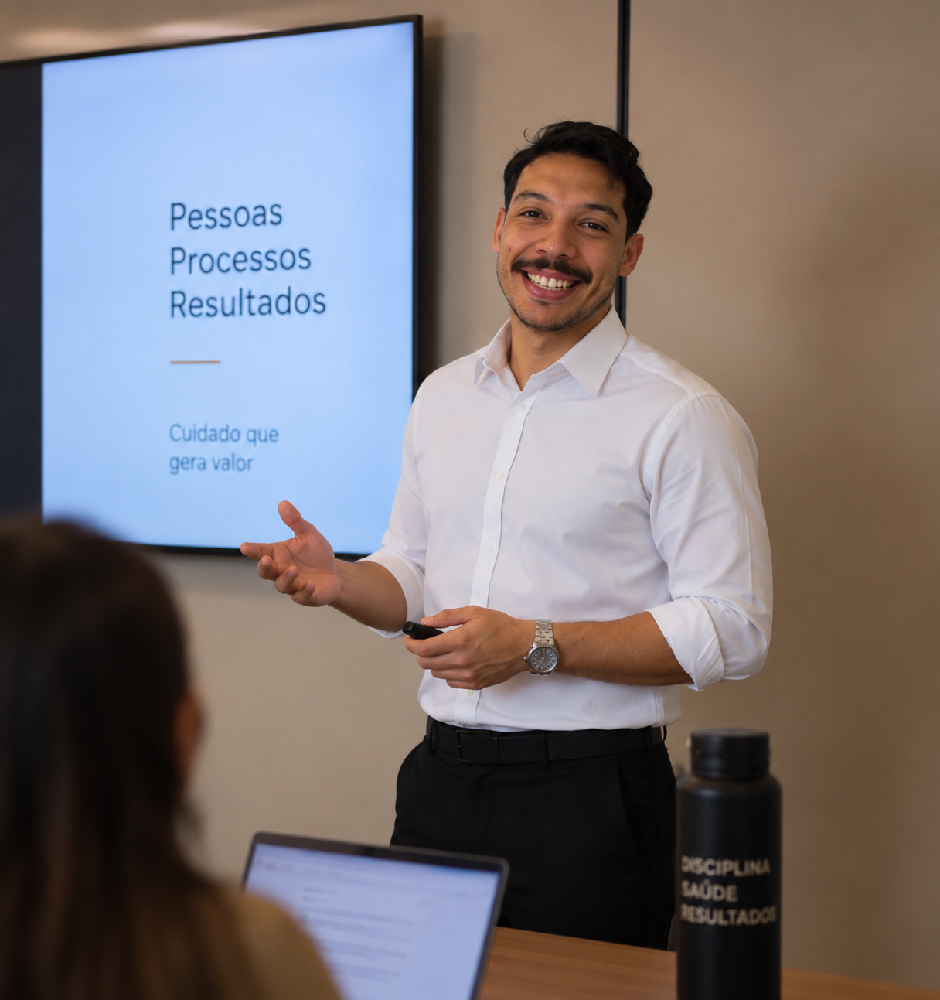
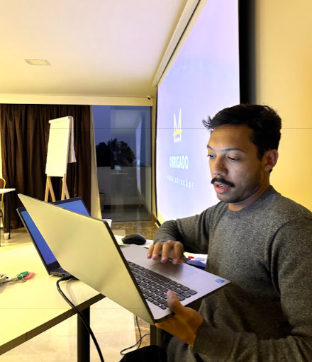

01Gestão
Operações
Estruturo processos, rotinas e fluxos para tornar a operação mais organizada, previsível e escalável.
Atuo na interseção entre estratégia, operações e projetos, conectando liderança, equipes e clientes para fazer a empresa funcionar melhor e crescer com estrutura. A origem é a saúde, onde aprendi a organizar complexidade sob risco real. O método vale para qualquer operação.
Eu organizo a operação para que o CEO possa focar no crescimento do negócio.

Foto profissionalCrescer é importante. Crescer com estrutura é o que sustenta o negócio.
Sou um profissional de gestão com experiência em liderança, operações, projetos e saúde, hoje direcionando minha atuação para ambientes onde organização, velocidade e execução fazem diferença.
Minha trajetória foi construída na interseção entre cuidado clínico, estrutura organizacional e tomada de decisão. Enfermeiro de formação, com especialização em geriatria e MBA em gestão, transitei por ambientes que exigem precisão técnica e visão estratégica ao mesmo tempo: da supervisão clínica à interface com equipes jurídicas, da análise de indicadores à estruturação de fluxos.
Meu trabalho está em entender o que precisa acontecer, organizar quem precisa fazer, estabelecer prioridades e acompanhar a execução até o resultado. Mais do que administrar tarefas, atuo para criar clareza operacional.
Trabalho com organizações que precisam de um profissional capaz de organizar complexidade, transformando demandas em processos sustentáveis e mensuráveis.
Atuo junto a operadoras de saúde, instituições, clínicas, agências e empresas que demandam rigor técnico, raciocínio sistêmico e entrega com impacto real. Meu compromisso não é com a presença. É com o resultado.
Treze frentes que sustentam uma operação capaz de crescer sem perder controle. Cinco vêm da gestão e dos projetos, oito vêm da saúde. Use o filtro para ver o recorte que interessa a você.
Estruturo processos, rotinas e fluxos para tornar a operação mais organizada, previsível e escalável.
Transformo objetivos em planos de execução, acompanho prazos, responsáveis, prioridades e entregas.
Identifico gargalos, retrabalho e ineficiências e transformo isso em processos mais simples e claros.
Conecto profissionais, distribuo responsabilidades e acompanho a execução para que cada área saiba exatamente o que precisa entregar.
Acompanho indicadores, riscos, prioridades e resultados para apoiar decisões melhores.
Estruturação e revisão de protocolos assistenciais com foco em continuidade, eficiência e adequação às diretrizes clínicas vigentes, da concepção ao monitoramento.
Apoio à construção de estruturas de governança que garantam segurança assistencial, conformidade técnica e rastreabilidade das decisões clínicas.
Estratégias de acompanhamento longitudinal para populações de alta complexidade, com foco em prevenção de agudizações e sustentabilidade do cuidado.
Suporte técnico em processos envolvendo operadoras, perícias, contestações e análise de pertinência clínica. Linguagem clínica traduzida para contextos jurídicos.
Avaliação criteriosa de solicitações e procedimentos à luz de protocolos clínicos, diretrizes baseadas em evidências e normas regulatórias.
Documentação técnica de alto padrão para suporte a decisões institucionais, processos judiciais, auditorias e comunicação com instâncias reguladoras.
Mapeamento, redesenho e implementação de fluxos internos que reduzam falhas, aumentem a eficiência operacional e melhorem a experiência clínica.
Leitura crítica de indicadores de saúde para identificar ineficiências, risco clínico e oportunidades de melhoria com base em dados populacionais e operacionais.
Meu papel é criar a conexão entre aquilo que foi decidido e aquilo que precisa ser executado.
Quatro etapas que se repetem em qualquer operação, do primeiro diagnóstico ao ajuste contínuo. Cada demanda é tratada com metodologia, não com improviso.
Mapear objetivos, contexto, prioridades e problemas. Antes de qualquer proposta, entendimento do problema real e das variáveis envolvidas.
Estruturar processos, responsabilidades, projetos e prioridades, com clareza sobre escopo, entregas e critérios. Sem solução genérica para problema específico.
Acompanhar a operação e garantir que as entregas avancem, com registro, rastreabilidade e comunicação contínua com quem decide.
Medir resultados pelos indicadores combinados, identificar gargalos e ajustar. Transparência sobre o que funcionou e o que precisa mudar.
Reinicia o cicloAtuação na interface entre assistência, gestão e governança, estruturando processos, mitigando riscos e construindo soluções que respondem às demandas reais do sistema de saúde.
Análise de pertinência, governança assistencial e gestão de populações crônicas.
Estruturação de fluxos, protocolos e indicadores de desempenho assistencial.
Suporte técnico especializado em demandas clínico-regulatórias e perícias.
Parceria técnica na tomada de decisões de alta complexidade assistencial.
Consultoria em estruturação de programas de saúde e gestão de risco assistencial.
O mesmo rigor aplicado a agências, times comerciais e operações de serviço que precisam de método, prioridade e acompanhamento.
Consigo conectar estratégia, pessoas, projetos e operação, do plano na mesa do CEO até o detalhe que trava a entrega.
Não fico apenas no planejamento. Acompanho o que precisa acontecer, com registro e rastreabilidade do que foi decidido.
Venho de um ambiente onde erro de processo tem consequência clínica. Esse rigor viaja bem para qualquer operação.

Espaço para foto
Espaço para foto
Espaço para fotoMeu trabalho é fazer a operação parar de depender do improviso.
Se você está estruturando uma empresa, crescendo uma operação, ou representa uma instituição com demandas técnicas na área da saúde, vamos conversar.